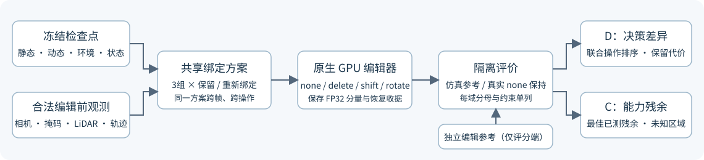
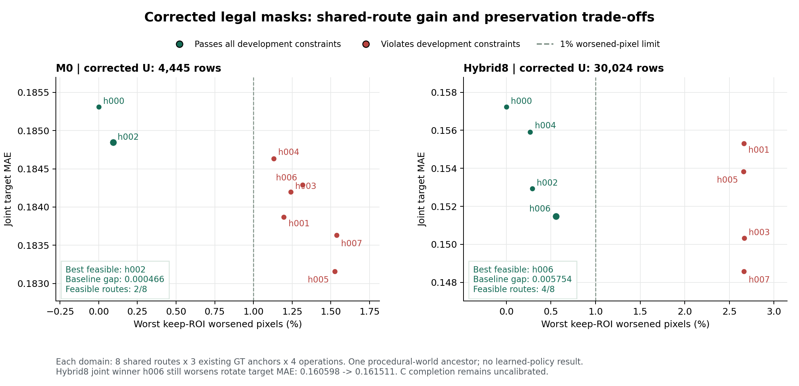
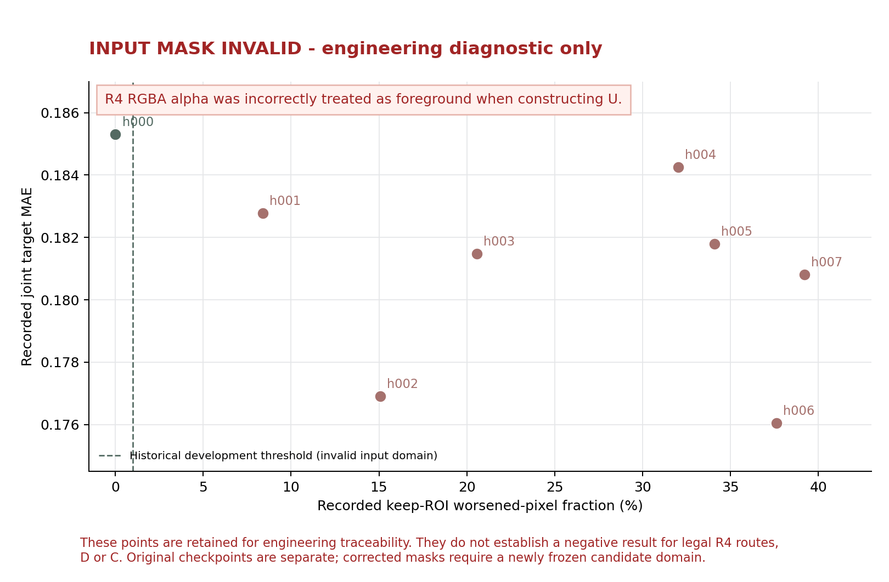

本轮完成逐车盘点、原生 GPU 共享绑定和隔离评价。修正后的两套仿真候选均存在满足暂定开发约束的更好共享绑定。M0 联合目标误差 0.185311→0.184845，hybrid8 为 0.157236→0.151483；这验证了当前有限域内存在可比较的选择，没有证明学生学习或跨世界泛化。
GPU 复查修正了前一轮仿真掩码的 alpha 通道读取错误：候选从错误的 392,468／490,823 行变为 4,445／30,024 行，真实场景仍为 2,703 行。旧仿真输出保留为工程错误记录，不纳入下表研究比较。32 帧原始掩码、96 张实际训练用灰度掩码及训练读取器已分别核对，原重建训练不受本次通道错误影响。

同一份保留／重新绑定方案先构成场景，再执行 none、删除、平移或旋转。原始几何、颜色、透明度、高斯数量及环境不训练；独立编辑参考只进入评分端。暂缓仍是查询层行为，本轮没有已训练策略。
四个工作台场景与 11 个 HorizonForge 场景，共 1,228 条车辆轨迹，包括未进入前相机的车辆。新增取回十个完整片段，共 9,843,128,477 字节；11 个 HorizonForge 全片的 2,181 条记录逐条核对 CRC 和 context。该部分未重建 11 个新场景。
初筛只读原始标注、相机与框内 LiDAR 标注计数。后者表示车辆在 FRONT 可见时的三维框内点数，不能当成前相机车身深度像素。框不是车身掩码，重叠不是物理遮挡真值，12 方位扇区不是隐藏表面完整性。每场准备队列保留三辆；所有正式资格仍为未知。
| 来源与完整原始编号 | 车辆总数 | 全片帧数 | 首条准备候选 track | 建议原始帧窗口 | 窗口 FRONT 帧 | 工程准备 |
|---|---|---|---|---|---|---|
| Waymo 10094743350625019937_3420_000_3440_000 | 60 | 199 | vBOasuXpjI7h7d-X_VEQdA | 89–137 | 49 | 已有模型；按逐车映射准备 |
| HorizonForge 004 · Waymo 10335539493577748957_1372_870_1392_870 | 22 | 198 | ZNn2Ay8hA4lh-bx-PLqV8g | 90–138 | 49 | 需准备掩码、重建与候选 |
| HorizonForge 020 · Waymo 11660186733224028707_420_000_440_000 | 91 | 197 | kYYKRxr4uWJekE0t7HNNzA | 148–196 | 49 | 需准备掩码、重建与候选 |
| HorizonForge 029 · Waymo 12820461091157089924_5202_916_5222_916 | 86 | 198 | EBIkFEdODvq4VyLrsMoASQ | 10–58 | 49 | 需准备掩码、重建与候选 |
| HorizonForge 035 · Waymo 13299463771883949918_4240_000_4260_000 | 83 | 198 | FSRNffS8NoOGw06gGoW_Eg | 0–48 | 27 | 需准备掩码、重建与候选 |
| Waymo 14705303724557273004_3105_000_3125_000 | 75 | 199 | kGWL6fDMqgKVnj8u6BwkgQ | 77–125 | 49 | 已有模型；按逐车映射准备 |
| HorizonForge 065 · Waymo 15021599536622641101_556_150_576_150 | 29 | 199 | NTjq-OhZ_97OMJ4xwJAxXg | 124–172 | 49 | 需准备掩码、重建与候选 |
| HorizonForge 067 · Waymo 1505698981571943321_1186_773_1206_773 | 48 | 198 | fvX_hIsYg8Udw0yYtS80mA | 37–85 | 49 | 需准备掩码、重建与候选 |
| HorizonForge 079 · Waymo 16229547658178627464_380_000_400_000 | 181 | 197 | F-BdiLVjKPCjUkWRfGazyw | 28–76 | 49 | 需准备掩码、重建与候选 |
| HorizonForge 081 · Waymo 16767575238225610271_5185_000_5205_000 | 54 | 199 | Nzr8Z9HvPobiKZAkyo364g | 12–60 | 49 | 需准备掩码、重建与候选 |
| HorizonForge 086 · Waymo 17152649515605309595_3440_000_3460_000 | 87 | 199 | yo_dSVIhAoMKoL_0SlPYcQ | 74–122 | 49 | 需准备掩码、重建与候选 |
| HorizonForge 113 · Waymo 2506799708748258165_6455_000_6475_000 | 11 | 199 | VLx4FLePT6eG4ju0l4eqag | 46–94 | 49 | 需准备掩码、重建与候选 |
| Waymo 4295449061847708198_3769_000_3789_000 | 164 | 198 | sHBKnTLsCTLjv07myyk-zQ | 149–197 | 49 | 已有模型；按逐车映射准备 |
| HorizonForge 140 · Waymo 4575389405178805994_4900_000_4920_000 | 167 | 199 | U5A8nnr2bk2ymzMwAxXq1g | 1–49 | 49 | 需准备掩码、重建与候选 |
| Waymo 473735159277431842_630_095_650_095 | 70 | 198 | --dPicxGnJBRxknAfgA-AA | 13–61 | 49 | 已有模型；按逐车映射准备 |
上表的首条候选用于安排准备，不能称为最佳可编辑车辆。工作台展示的全序列前六张预览与 49 帧准备队列采用不同排序。全部 45 条及未入选车辆均保留在 CSV。
原三个配置各登记 8 个共享方案。仅在现有独立编辑参考的 0／8／15 三锚评分；真实场景取原 49 帧的首／中／末锚。原有 16／16／49 帧总分母保留，其余帧未测，不补零。M0 和 hybrid8 来自同一物理世界。
| 配置 | 输入域 | 已测／登记帧 | 共享方案 | 输出数 | 原生 none 最大差 | 枚举墙钟秒 |
|---|---|---|---|---|---|---|
| procedural_world_dataset_r2_vehicle0 · 原 M0 10K | 修正掩码后的原候选域 | 3 / 16 | 8 | 96 | 0.000000 | 32.775655 |
| procedural_world_dataset_r2_vehicle0 · hybrid8 10K | 修正掩码后的原候选域 | 3 / 16 | 8 | 96 | 0.000000 | 34.576569 |
| Waymo 14705303724557273004_3105_000_3125_000 · 原生 30K | 原候选域（真实掩码未受影响） | 3 / 49 | 8 | 96 | 0.000000 | 29.722686 |
每组实际覆盖保存、退出后恢复完整原模型组件／运行状态／随机状态、FP32 重放及下一阶段枚举入口。冻结模型与优化器状态通过原始完整检查点引用保留；推理没有创建新优化器。修复后的 CPU 合同测试共 15 项通过，包含不透明 RGBA／RGB／灰度／LA 的实际 PNG 回环及逐帧掩码分母核对。本轮没有长训练，未用 CPU 检查替代原生验证。hybrid 的加载器归一化副作用及精确恢复另留工程收据，后续改用私有输入副本。
联合目标对各非空旧位／新车体区域先归一，再等权合并帧和操作。保留域与 none 单独约束：MAE 增量上限 0.005；保留域像素误差增量超过 0.02 的比例上限 1%；none 原始 RGB 变化 MAE 上限 0.005。它们是评分前声明的开发条件，没有被称为部署安全阈值。
| 配置 | 评分域 | 已评方案 | 满足开发约束方案 | 全部保留目标误差 | 同域最佳残余 | 全部保留→最佳改善 | 同域最佳共享方案 |
|---|---|---|---|---|---|---|---|
| procedural_world_dataset_r2_vehicle0 · 原 M0 10K | 修正掩码后的原候选域 | 8 | 2 | 0.185311 | 0.184845 | 0.000466 | h002 |
| procedural_world_dataset_r2_vehicle0 · hybrid8 10K | 修正掩码后的原候选域 | 8 | 4 | 0.157236 | 0.151483 | 0.005754 | h006 |
| Waymo 14705303724557273004_3105_000_3125_000 · 原生 30K | 原候选域（真实掩码未受影响） | 8 | 不可计算 | 不可计算 | 不可计算 | 不可计算 | 不可计算 |
这些最优方案 ID 来自隔离真值的后验完整枚举，角色是有限域评价参照；部署决策器尚未训练。学生泛化、风险—覆盖和任务完成率本轮均不作数值结论。
正确候选的 M0 有 2／8 份方案满足开发约束，hybrid8 为 4／8；最优共享方案分别为 h002、h006。三档约束敏感性 0.001／0.005／0.01 下，最优方案与通过数均未变。原定 95% 贡献细分没有追加正式枚举；两个早期探针均基于无效的旧候选全集，仅保留为工程诊断，不进入研究比较。

| 配置 | 共享方案 | 操作 | 全部保留 | 联合最优共享方案 | 误差变化（正数为恶化） |
|---|---|---|---|---|---|
| procedural_world_dataset_r2_vehicle0 · 原 M0 10K | h002 | delete | 0.154840 | 0.154548 | -0.000292 |
| procedural_world_dataset_r2_vehicle0 · 原 M0 10K | h002 | shift | 0.157718 | 0.156880 | -0.000838 |
| procedural_world_dataset_r2_vehicle0 · 原 M0 10K | h002 | rotate | 0.243376 | 0.243109 | -0.000267 |
| procedural_world_dataset_r2_vehicle0 · hybrid8 10K | h006 | delete | 0.184097 | 0.173974 | -0.010123 |
| procedural_world_dataset_r2_vehicle0 · hybrid8 10K | h006 | shift | 0.127014 | 0.118963 | -0.008051 |
| procedural_world_dataset_r2_vehicle0 · hybrid8 10K | h006 | rotate | 0.160598 | 0.161511 | 0.000913 |
hybrid8 的联合最优 h006 在旋转上的目标误差从 0.160598 升至 0.161511（恶化约 0.000913）。联合改善不代表每种操作都改善；这里没有按操作另挑绑定后拼成成功结果。旧错误掩码域的数值只作工程历史，不用于 D/C 判断。

| 共享方案 | 联合目标误差 | 开发约束 | 保留域恶化比例（最大） | none 变化（最大） | 有限域差 |
|---|---|---|---|---|---|
| h000 | 0.185311 | 通过 | 0.000% | 0 | 0.000466 |
| h001 | 0.183871 | 未通过 | 1.197% | 0.002463 | 不可计算 |
| h002 | 0.184845 | 通过 | 0.092% | 0.000169 | 0.000000 |
| h003 | 0.184200 | 未通过 | 1.240% | 0.002496 | 不可计算 |
| h004 | 0.184633 | 未通过 | 1.130% | 0.001158 | 不可计算 |
| h005 | 0.183157 | 未通过 | 1.526% | 0.002463 | 不可计算 |
| h006 | 0.184288 | 未通过 | 1.318% | 0.001315 | 不可计算 |
| h007 | 0.183630 | 未通过 | 1.538% | 0.002496 | 不可计算 |
| 共享方案 | 联合目标误差 | 开发约束 | 保留域恶化比例（最大） | none 变化（最大） | 有限域差 |
|---|---|---|---|---|---|
| h000 | 0.157236 | 通过 | 0.000% | 0 | 0.005754 |
| h001 | 0.155302 | 未通过 | 2.662% | 0.004145 | 不可计算 |
| h002 | 0.152943 | 通过 | 0.289% | 0.000604 | 0.001460 |
| h003 | 0.150329 | 未通过 | 2.667% | 0.004467 | 不可计算 |
| h004 | 0.155908 | 通过 | 0.268% | 0.000327 | 0.004425 |
| h005 | 0.153827 | 未通过 | 2.660% | 0.004145 | 不可计算 |
| h006 | 0.151483 | 通过 | 0.557% | 0.000674 | 0.000000 |
| h007 | 0.148573 | 未通过 | 2.665% | 0.004467 | 不可计算 |
| 共享方案 | 联合目标误差 | 开发约束 | 保留域恶化比例（最大） | none 变化（最大） | 有限域差 |
|---|---|---|---|---|---|
| h000 | 不可计算 | 未知 | 不可计算 | 0 | 不可计算 |
| h001 | 不可计算 | 未知 | 不可计算 | 0.000157 | 不可计算 |
| h002 | 不可计算 | 未知 | 不可计算 | 0.000107 | 不可计算 |
| h003 | 不可计算 | 未知 | 不可计算 | 0.000181 | 不可计算 |
| h004 | 不可计算 | 未知 | 不可计算 | 0.000197 | 不可计算 |
| h005 | 不可计算 | 未知 | 不可计算 | 0.000297 | 不可计算 |
| h006 | 不可计算 | 未知 | 不可计算 | 0.000197 | 不可计算 |
| h007 | 不可计算 | 未知 | 不可计算 | 0.000297 | 不可计算 |
真实场景仅核对实际 none 保持与工程有效性；缺少完整独立编辑真值，所以反事实安全候选数、决策差距和最佳编辑残余均不可计算。即使 none 保持通过，也不能说删除／旋转已安全。完成阈值未校准，所有表示能力分层仍为 C?；没有把拒判当作完成任务。
代理检查实际中帧输出后，可见删除仍有车体残留、旋转仍有重影；有限域最佳不等于完成编辑。当前输出不记作人工验收通过，也不据此断言所有更细路由或其他观测都不可行。
完整原生影像、FP32、逐车预览与恢复侧车在本轮本地交付包中。仓库保存代码、数值、组件图及归档收据；工作台复现入口见 workbench_changes/install_workbench.py。
本轮是原生小域与车辆准备验证：三配置仍只有两个已有物理祖先，完整编辑参考仅来自一个程序化世界。来源组粗细、合法可见贡献、观测缺失和表示残余分别登记。没有启动回归、偏好或策略训练，也没有完成跨世界可学习验证。后续先按逐车准备队列补齐合法掩码、背景显露和逐车候选，再锁定独立祖先及校准分区。
共享平台保持场景导航、候选浏览和折叠影像对照；本报告、阶段说明和实验日志独立交付。静态引用、脚本和选择逻辑已检查；浏览器工具此前阻止 file://，因此没有声称完成真实浏览器交互验收。人工验收字段保留 null。